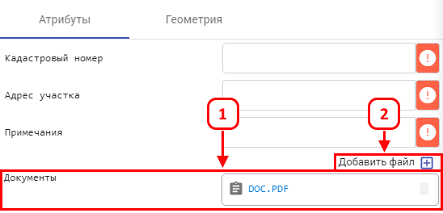

Для прикрепления документа (файла) к объекту на карте, требуется получить дополнительную информацию об объекте (п.4.1) или создать объект на карте (п.4.3), далее найти в панели атрибутов поле «Документы», в нём отобразятся все прикрепленные документы (1). Для прикрепления нового документа следует нажать «Добавить файл» (2), в появившемся окне – выбрать файл и нажать «Открыть».
